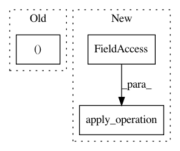

2e5c3bcd5532a824a589b2a7eb4f0d5cca5fd09a,tensorflow_transform/beam/analysis_graph_builder.py,_OptimizeVisitor,_visit_apply_savedmodel_operation,#_OptimizeVisitor#Any#Any#,397
Before Change
return result_fine_grained_view
def _visit_apply_savedmodel_operation(self, operation_def, upstream_views):
(upstream_view,) = upstream_views
if upstream_view.fine_grained_view:
raise ValueError(
"Was not expecting a fine_grained_view input for ApplySavedModel")
After Change
fine_grained_view = collections.OrderedDict()
for (dataset_idx, dataset_key) in enumerate(self._sorted_dataset_keys):
infix = "AnalysisIndex{}".format(dataset_idx)
input_node = nodes.apply_operation(
beam_nodes.ExtractInputForSavedModel,
dataset_key=dataset_key,
label="ExtractInputForSavedModel[{}]".format(infix))
// We use an index for the label in order to make beam labels more stable.
(fine_grained_view[dataset_key],) = (
nodes.OperationNode(
operation_def._replace(
In pattern: SUPERPATTERN
Frequency: 4
Non-data size: 3
Instances
Project Name: tensorflow/transform
Commit Name: 2e5c3bcd5532a824a589b2a7eb4f0d5cca5fd09a
Time: 2020-04-02
Author: zoy@google.com
File Name: tensorflow_transform/beam/analysis_graph_builder.py
Class Name: _OptimizeVisitor
Method Name: _visit_apply_savedmodel_operation
Project Name: tensorflow/transform
Commit Name: 687e31d276db17b4ac7bea08b01c1e5401168ca9
Time: 2019-01-23
Author: tf-transform-dev@google.com
File Name: tensorflow_transform/analyzers.py
Class Name:
Method Name: vocabulary
Project Name: tensorflow/transform
Commit Name: 54e07bdb2ba299fd6f364289510612f2fe6af8ff
Time: 2018-11-28
Author: tf-transform-dev@google.com
File Name: tensorflow_transform/nodes_test.py
Class Name: NodesTest
Method Name: testValueNodeWithTooHighValueIndex
Project Name: tensorflow/transform
Commit Name: 54e07bdb2ba299fd6f364289510612f2fe6af8ff
Time: 2018-11-28
Author: tf-transform-dev@google.com
File Name: tensorflow_transform/nodes_test.py
Class Name: NodesTest
Method Name: testValueNodeWithNegativeValueIndex